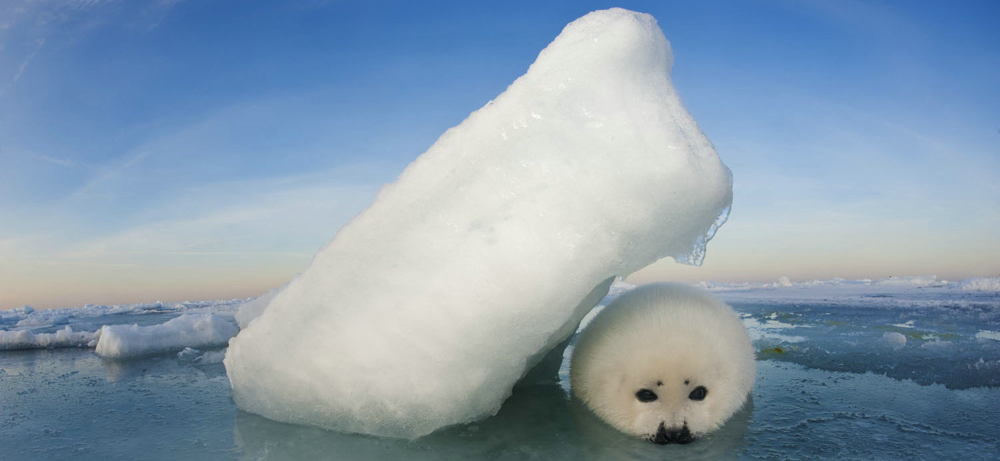

Causes of The Crisis
1. Pollution: Marine pollution, especially plastic debris, has invaded the icy homes of seals. Baby seals, in their curious nature, often mistake these pollutants for food or get entangled in them, leading to injuries or fatalities.
2. Global Warming: Our planet's fever is melting the very ice baby seals depend on. As the ice caps shrink, these pups find fewer safe havens from predators and face more significant challenges accessing food, leading to starvation for many.
3. Hunting: Despite international bans and protections, illegal hunting continues in some parts of the world. Coveted for their fur, baby seals are often prime targets, with thousands falling victim to this brutal trade annually.
4. Other Factors: Overfishing reduces the availability of crucial prey species for seals, making it harder for mothers to find food and feed their pups. Additionally, increased human activity in the Arctic and Antarctic disrupts the natural behaviors of seals, adding to their stress and vulnerability.

Consequences of The Crisis
1. Declining Populations: The cumulative effect of the challenges they face has led to a significant decline in baby seal populations. Species like the harp seal have seen devastating drops in numbers, pushing them closer to the brink of extinction.
2. Imbalanced Ecosystems: Seals play a vital role in maintaining the health and balance of marine ecosystems. Their decline disrupts food chains and allows certain species to proliferate unchecked, leading to unpredictable changes in marine biodiversity.
3. Economic Impact: Regions that depend on eco-tourism, where seal watching is a popular attraction, face financial setbacks. The decline in seal populations can deter tourists, impacting local communities and businesses.
4. Loss of Global Heritage: Every creature, including the baby seal, adds to the diverse tapestry of our planet's life. Their decline not only impoverishes nature but also deprives future generations of witnessing and appreciating the wonder of these magnificent beings.

Our world is interconnected, and the ripples of change spread far and wide. Understanding the dire consequences of the survival crisis faced by baby seals is the first step toward remedying the situation. Let's take a stand today and act for a brighter, more sustainable tomorrow for these innocent beings.